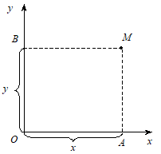
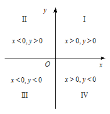
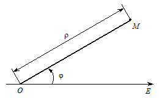
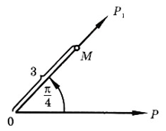
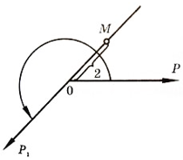
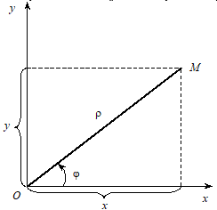
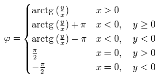

Тема заняття. Декартова та полярна система координат, вектори на площині; комплексні числа, як вектори координатної площини
Згадаємо основне про прямокутну (декартову) система координат на площині
Дві взаємно перпендикулярні осі Ох і Оу , що мають спільний початок О і однакову одиницю масштабу (рис. 1), утворюють прямокутну, або декартову систему координат на площині.

Рис. 1
Вісь Ох називається віссю абсцис, а вісь Оу — віссю ординат. Точка О перетину осей називається початком координат. Площина, в якій містяться осі Ох і Оу, називається координатною площиною і позначається Оху.
Нехай М — довільна точка площини. Опустимо з неї перпендикуляри МА і MB відповідно на осі Ох і Оу. Точки А і В перетину цих перпендикулярів з осями називаються проекціями точки М на осі координат.
Точкам А і В відповідають певні числа х і у — їхні координати на осях Ох і Оу. Прямокутними координатами х і у точки М будемо називати відповідно величини ОА і ОВ: х = ОА, у = ОВ. Число х називається абсцисою точки М, число у — її ординатою.
Той факт, що точка М має координати х і у, символічно позначають так: М(х; у). При цьому першою в дужках вказують абсцису, а другою — ординату. Початок координат має координати (0; 0).
Таким чином, коли вибрано систему координат, кожній точці М площини відповідає пара чисел (х; у) — її прямокутних координат і, навпаки, кожній парі чисел (х; у) відповідає, причому лише одна, точка М на площині Оху, така що її абсциса дорівнює х, а ордината дорівнює у.
Отже, прямокутна система координат на площині встановлює взаємно однозначну відповідність між множиною всіх точок площини і множиною пар чисел, що дає змогу при розв’язуванні геометричних задач застосовувати алгебраїчні методи.
Осі координат розбивають площину на чотири частини; їх називають чвертями, квадрантами або координатними кутами і нумерують римськими цифрами I, II, III, IV так, як показано на рис. 2 (на ньому подано також нерівності, що визначають знаки координат точок залежно від їхнього розміщення).

Рис. 2
Поняття про полярну систему координат
Полярна система координат — двовимірна система координат, в якій кожна точка на площині визначається двома числами — кутом та відстанню. Полярна система координат особливо корисна у випадках, коли відношення між точками найпростіше зобразити у вигляді відстаней та кутів. В більш поширеній, декартовій (прямокутній) системі координат, такі відношення можна встановити лише шляхом застосування тригонометричних рівнянь.
Полярна система координат складається з деякої точки О, що називається полюсом, і променя ОЕ, що виходить з неї і називається полярною віссю. Крім того, задається одиниця масштабу для вимірювання довжин відрізків.

Рис. 3
Нехай задано полярну систему координат і нехай М — довільна точка площини. Позначимо через r відстань від точки М до точки О , а через j — кут, на який потрібно повернути проти годинникової стрілки полярну вісь для суміщення її з променем ОМ (рис. 3).
Полярними координатами точки М називаються числа r і j. Число r вважають першою координатою і називають полярним радіусом, число j — другою координатою і називають полярним кутом.
Точка М із полярними координатами r і j позначається так: .
Зазвичай вважають, що полярні координати r і j змінюються в таких межах:
\(0\le\rho<+\infty;\) \(0\le\phi<2\pi\).
Проте іноді доводиться розглядати кути, більші за 2p, а також від’ємні кути, тобто кути, відлічувані від полярної осі за годинниковою стрілкою.
Приклад 1
Побудувати точку M з координатами (3, π/4) в полярній системі координат.

Проведемо через полюс O вісь OP1 под кутом \(\frac{\pi}{4}\) до полярной осі OP (додатній напрям вказано стрілкою) і відкладемо від полюса в додатному напрямі осі OP1 відрізок OM, рівний трьом одиницям. Кінець M цього відрізка і є шукана точка.
Приклад 2
Побудувати в полярній системі координат точку M(2, 5π/4).

Проведемо через полюс O вісь OP1 під кутом \(\frac{5\pi}{4}\) до полярної осі (додатній напрям на ній вказано стрілкою) і відкладемо від полюса в від’ємному напряму осі OP1 відрізок OM, рівний двом одиницям. Кінець цього відрізка і є шукана точка.
Зв'язок між декартовими та полярними координатами
Встановимо зв’язок між полярними координатами точки і її прямокутними координатами, припускаючи, що початок прямокутної системи координат збігається з полюсом, а додатна піввісь абсцис — з полярною віссю. Нехай точка М має прямокутні координати х і у і полярні координати \(\rho\) і \(\varphi\) (рис. 4):

Рис. 4
Пару полярних координат \(\rho\) та \(\varphi\); можна перевести в декартові координати x та y шляхом застосування тригонометричних фукнцій синуса та косинуса: (формули переходу від полярної до декартової системи координат)
\(x=\rho\cdot c o s{\varphi}\),\(y=\rho\cdot s i n{\varphi}\) . (1)
в той час як дві декартові координати x та y можуть бути переведені в полярну координату \(\rho\): (формули переходу від декартової до полярної системи координат)
\(\rho=\sqrt{x^2+y^2},\) (2)
Для визначення полярного кута φ, слід взяти до уваги два наступні міркування:
Для \(\rho\) = 0, φ може бути довільним дійсним числом.
Для \(\rho\) ≠ 0, аби отримати унікальне значення φ, слід обмежитись інтервалом в 2π. Зазвичай, обирають інтервал [0, 2π) або (−π, π].
Для обчислення φ в інтервалі (−π, π], можна скористатись такими рівняннями:
 (3)
Приклад 3
Знайти прямокутні координати точки М з полярними координатами \(\left(3;-\frac{2\pi}{3}\right)\).
Маємо \(\rho=3\) і \(\varphi=-\frac{2\pi}{3}\). За формулами (1) знаходимо
\(х=3cos(\frac{-2π}{3})=3⋅-\frac{1}{2}=-\frac{3}{2}\),
\(y=3sin{\left(-\frac{2\pi}{3}\right)}=3\cdot\left(-\frac{\sqrt3}{2}\right)=-\frac{3\sqrt3}{2}\).
Тобто, \(M\left(-\frac{3}{2};-\frac{3\sqrt3}{2}\right)\).
Приклад 4
Знайти полярні координати точки М з прямокутними координатами \(\left(\sqrt3;-1\right)\).
Маємо \(x=\sqrt3\) і \(y=-1\). За формулою (2) знаходимо
\(\rho=\sqrt{\left(-\sqrt3\right)^2+\left(-1\right)^2}=2\),
За формулою (3) знаходимо
\(\phi=arctg\left(\frac{-1}{-\sqrt3}\right)-\pi=\frac{\pi}{6}-\pi=-\frac{5\pi}{6}\).
Тобто, \(M\left(2;-\frac{5\pi}{6}\right)\).
Комплексні числа
Відомо, що кореня парного степеня з від’ємного числа у множині дійсних чисел не існує. Зокрема, не існує дійсних чисел, які задовольняють рівнянню \(х^2+1=0\).
Таким чином, виникає необхідність подальшого розширення поняття числа. Таке розширення полягає у створенні числової множини, в якій завжди можна було б здійснити операцію добування кореня з від’ємного числа. Формально припустимо, що за межами множини дійсних чисел існує число, яке дорівнює \(\sqrt{-1}\). Позначимо його буквою і. Таким чином,
\(i^2=-1\).
\(\sqrt{-1}=і\)
У всьому іншому діятимемо з символом і, як із звичайною буквою при тотожних алгебраїчних перетвореннях.
Вираз \(a+bi\), де a, b – будь-які дійсні числа, і – уявна одиниця, називається комплексним числом.
Дійсні числа a, b, з яких складається комплексне число \(z=a+bi\), називаються компонентами цього числа. Перша компонента a називається дійсною частиною комплексного числа z і позначається символом \(Re{z}\). Друга компонента b називається уявною частиною числа z і позначається символом \(Im{z}\) (зауважимо, що уявна частина комплексного числа є числом дійсним). Наприклад, якщо \(z=2+7i\), то \(Re{z}=2\), \(Im{z}=7\).
Запис \(z=a+bi\) називається алгебраїчною формою числа z. Знак плюс між \(a\) і \(bi\), а також знак множення між b та і не мають поки звичного змісту, оскільки правила дій над комплексними числами ще невизначено. Кожне дійсне число можна розглядати як комплексне число. Справа в тому, що будь-яке дійсне число можна подати у вигляді \(а=a+0i\).
Таким чином, поняття комплексного числа узагальнює (є більш широким) поняття дійсного числа.
Якщо \(b\neq0\), то комплексне число \(a+bi\) називають уявним.
Якщо \(a=0\), то комплексне число \(0+bi\) називають суто уявним і замість \(z=0+bi\) пишуть \(z=bi\).
Множина, яка утворюється приєднанням до множини дійсних чисел множини уявних чисел, називається множиною комплексних чисел.
Позначається множина комплексних чисел буквою С.
Дії над комплексними числами
Додавання. Сумою двох комплексних чисел \(a+bi\) і \(c+di\) називається комплексне число \(\left(a+c\right)+\left(b+d\right)i\), тобто
\(\left(a+c\right)+\left(b+d\right)i\)
Наприклад, \(\left(3-2i\right)+\left(7+i\right)=\left(3+7\right)+\left(-2+1\right)i=10-i\). Або просто спростимо вираз, \(\left(3-2i\right)+\left(7+i\right)=3-2i+7+і=10-i\).
Знайдемо суму чисел \(z_1=a+0i\) і \(z_2=0+bi\). Маємо
\(z_1+z_2=\left(a+0i\right)+\left(0+bi\right)=\left(a+0\right)+\left(0+b\right)i=a+bi\).
Отже, комплексне число \(a+bi\) можна розглядати як суму дійсного числа a та чисто уявного числа \(bi\). Тому в запису \(a+bi\) знак плюс можна вважати знаком додавання.
Множення. Добутком двох комплексних чисел \(a+bi\) і \(c+di\) називається комплексне число \(\left(aс-bd\right)+\left(ad+bc\right)i\), тобто
\(\left(a+bi\right)\cdot\left(c+di\right)=aс-bd+ad+bci\).
Наприклад, \(\left(2-3i\right)\cdot\left(1+4i\right)=\left(2\cdot1-\left(-3\right)\cdot4\right)+\left(2\cdot4+\left(-3\right)\cdot1\right)i=14+5i\).
Або, \(\left(2-3i\right)\cdot\left(1+4i\right)=2\cdot1+2\cdot4i-3і⋅1-3і⋅4і=2+8і-3і-3і2=2+5і+3=14+5i\). Зверніть увагу , \(i^2=-1\).
Отже, у запису комплексного числа \(a+bi\) уявну частину \(bi\) можна розглядати як добуток дійсного числа на уявну одиницю.
Віднімання. Різницею двох комплексних чисел \(a+bi\) і \(c+di\) називається таке третє комплексне число, додавши яке до від’ємника, дістанемо зменшуване.
Позначимо через \(x+yi\) різницю чисел \(a+bi\) і \(c+di\), тобто
\(\left(a+bi\right)-\left(c+di\right)=х+уi\).
Таким чином, правило віднімання матиме вигляд
\(\left(a+bi\right)-\left(c+di\right)=\left(a-c\right)+\left(b-d\right)i\).
Наприклад, \(\left(3-2i\right)-\left(7+i\right)=3-2i-7-і=-4-3i\).
Ділення. Часткою двох комплексних чисел \(a+bi\) і \(c+di\neq0\) називається таке третє комплексне число, помноживши яке на дільник, дістанемо ділене.
\(\frac{a+bi}{c+di}=\frac{ac+bd}{c^2+d^2}+\frac{bc-ad}{c^2+d^2}i\) (4)
Комплексні числа \(a+bi\) і \(a-bi\), які відрізняються тільки знаками перед уявною частиною, називаються спряженими.
Якщо \(a+bi\neq0\) , то
\(\left(a+bi\right)\left(a-bi\right)=a^2+b^2\) (5)
є додатнім дійсним числом.
Користуючись рівністю (5), дістанемо досить простий спосіб ділення комплексних чисел: чисельник і знаменник частки \(\frac{a+bi}{c+di}\) множимо на число \(c-di\), спряжене із знаменником. В результаті дістанемо число, яке записано у правій частині рівності (4).
Наприклад, \(\frac{5+i}{1+i}=\frac{\left(5+i\right)\left(1-i\right)}{\left(1+i\right)\left(1-i\right)}=\frac{5-5i+i-i^2}{1-i^2}=\frac{6-4i}{2}=3-2i\).
Тому дії над комплексними числами а + bі виконуються так, як і дії над многочленами, вважаючи, що і2 = -1.